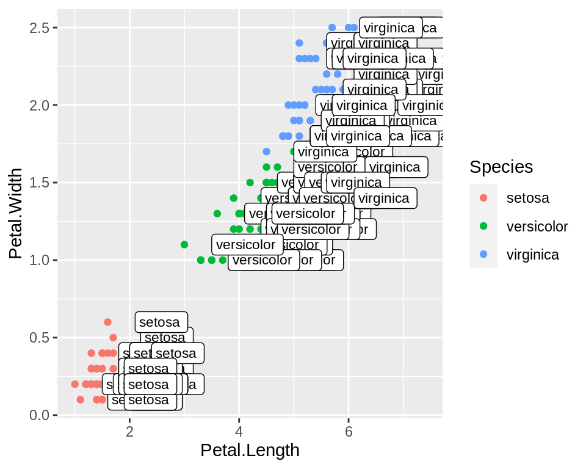
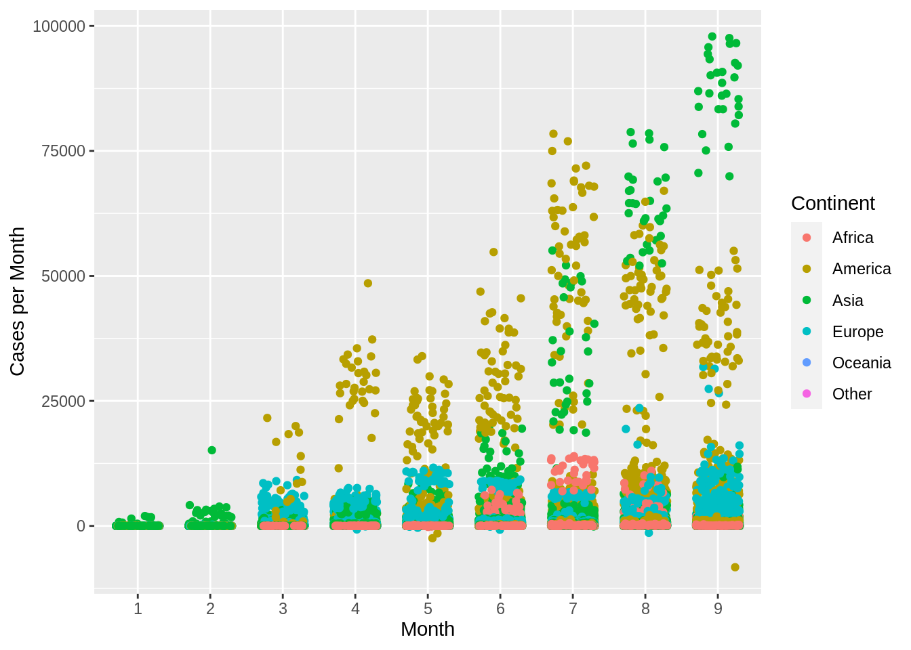

R graphics using ggplot2
R Programming Foundation for Life Scientists
1 Introduction
Although the plotting capabilities of R base are really impressive compared to other programming languages, there are other packages available to help you generate awesome graphics. Two of the more popular packages besides the base package are lattice and ggplot2. According to many users, these are superior to the base plot library, especially when it comes to exploratory data analysis; without too much work, they generate trellis graphics, e.g. graphs that display a variable or the relationship between variables, conditioned on one or more other variables. Over the last years ggplot2 has become the standard plotting library for many R users, especially as it keeps evolving and new features are added continuously. In addition to being more convient for certain types of plots, many feel that the default colors, axis types etc. look better on ggplot2 compared to the base R and lattice libraries.
2 Basics
First step is to make sure that ggplot2 is installed and the package is loaded.
library(ggplot2)We use the iris data to get started. This dataset has four continuous variables and one categorical variable. It is important to remember about the data type when plotting graphs.
data("iris")
head(iris)## Sepal.Length Sepal.Width Petal.Length Petal.Width Species
## 1 5.1 3.5 1.4 0.2 setosa
## 2 4.9 3.0 1.4 0.2 setosa
## 3 4.7 3.2 1.3 0.2 setosa
## 4 4.6 3.1 1.5 0.2 setosa
## 5 5.0 3.6 1.4 0.2 setosa
## 6 5.4 3.9 1.7 0.4 setosa2.1 Building a plot
ggplot2 plots are initialised by specifying the dataset. This can be saved to a variable or it draws a blank plot.
ggplot(data=iris)
Now we can specify what we want on the x and y axes using aethetic mapping. And we specify the geometric using geoms. Note that the variable names do not have double quotes "" like in base plots.
ggplot(data=iris)+
geom_point(mapping=aes(x=Petal.Length,y=Petal.Width))2.2 Multiple geoms
Further geoms can be added. For example let’s add a regression line. When multiple geoms with the same aesthetics are used, they can be specified as a common mapping. Note that the order in which geoms are plotted depends on the order in which the geoms are supplied in the code. In the code below, the points are plotted first and then the regression line.
ggplot(data=iris,mapping=aes(x=Petal.Length,y=Petal.Width))+
geom_point()+
geom_smooth(method="lm")2.3 Using colors
We can use the categorical column Species to color the points. The color aesthetic is used by geom_point and geom_smooth. Three different regression lines are now drawn. Notice that a legend is automatically created.
ggplot(data=iris,mapping=aes(x=Petal.Length,y=Petal.Width,color=Species))+
geom_point()+
geom_smooth(method="lm")If we wanted to keep a common regression line while keeping the colors for the points, we could specify color aesthetic only for geom_point.
ggplot(data=iris,mapping=aes(x=Petal.Length,y=Petal.Width))+
geom_point(aes(color=Species))+
geom_smooth(method="lm")2.4 Aesthetic parameter
We can change the size of all points by a fixed amount by specifying size outside the aesthetic parameter.
ggplot(data=iris,mapping=aes(x=Petal.Length,y=Petal.Width))+
geom_point(aes(color=Species),size=3)+
geom_smooth(method="lm")2.5 Aesthetic mapping
We can map another variable as size of the points. This is done by specifying size inside the aesthetic mapping. Now the size of the points denote Sepal.Width. A new legend group is created to show this new aesthetic.
ggplot(data=iris,mapping=aes(x=Petal.Length,y=Petal.Width))+
geom_point(aes(color=Species,size=Sepal.Width))+
geom_smooth(method="lm")2.6 Discrete colors
We can change the default colors by specifying new values inside a scale.
ggplot(data=iris,mapping=aes(x=Petal.Length,y=Petal.Width))+
geom_point(aes(color=Species,size=Sepal.Width))+
geom_smooth(method="lm")+
scale_color_manual(values=c("red","blue","green"))2.7 Continuous colors
We can also map the colors to a continuous variable. This creates a color bar legend item.
ggplot(data=iris,mapping=aes(x=Petal.Length,y=Petal.Width))+
geom_point(aes(color=Sepal.Width))+
geom_smooth(method="lm")2.8 Titles
Now let’s rename the axis labels, change the legend title and add a title, a subtitle and a caption. We change the legend title using scale_color_continuous(). All other labels are changed using labs().
ggplot(data=iris,mapping=aes(x=Petal.Length,y=Petal.Width))+
geom_point(aes(color=Sepal.Width))+
geom_smooth(method="lm")+
scale_color_continuous(name="New Legend Title")+
labs(title="This Is A Title",subtitle="This is a subtitle",x=" Petal Length",
y="Petal Width", caption="This is a little caption.")2.9 Axes modification
Let’s say we are not happy with the x-axis breaks 2,4,6 etc. We would like to have 1,2,3… We change this using scale_x_continuous().
ggplot(data=iris,mapping=aes(x=Petal.Length,y=Petal.Width))+
geom_point(aes(color=Sepal.Width))+
geom_smooth(method="lm")+
scale_color_continuous(name="New Legend Title")+
scale_x_continuous(breaks=1:8)+
labs(title="This Is A Title",subtitle="This is a subtitle",x=" Petal Length",
y="Petal Width", caption="This is a little caption.")2.10 Facetting
We can create subplots using the facetting functionality. Let’s create three subplots for the three levels of Species.
ggplot(data=iris,mapping=aes(x=Petal.Length,y=Petal.Width))+
geom_point(aes(color=Sepal.Width))+
geom_smooth(method="lm")+
scale_color_continuous(name="New Legend Title")+
scale_x_continuous(breaks=1:8)+
labs(title="This Is A Title",subtitle="This is a subtitle",x=" Petal Length",
y="Petal Width", caption="This is a little caption.")+
facet_wrap(~Species)2.11 Themes
The look of the plot can be changed using themes. Let’s can the default theme_grey() to theme_bw().
ggplot(data=iris,mapping=aes(x=Petal.Length,y=Petal.Width))+
geom_point(aes(color=Sepal.Width))+
geom_smooth(method="lm")+
scale_color_continuous(name="New Legend Title")+
scale_x_continuous(breaks=1:8)+
labs(title="This Is A Title",subtitle="This is a subtitle",x=" Petal Length",
y="Petal Width", caption="This is a little caption.")+
facet_wrap(~Species)+
theme_bw()All non-data related aspects of the plot can be modified through themes. Let’s modify the colors of the title labels and turn off the gridlines. The various parameters for theme ca be found using ?theme.
ggplot(data=iris,mapping=aes(x=Petal.Length,y=Petal.Width))+
geom_point(aes(color=Sepal.Width))+
geom_smooth(method="lm")+
scale_color_continuous(name="New Legend Title")+
scale_x_continuous(breaks=1:8)+
labs(title="This Is A Title",subtitle="This is a subtitle",x=" Petal Length",
y="Petal Width", caption="This is a little caption.")+
facet_wrap(~Species)+
theme_bw()+
theme(
axis.title=element_text(color="Blue",face="bold"),
plot.title=element_text(color="Green",face="bold"),
plot.subtitle=element_text(color="Pink"),
panel.grid=element_blank()
)Themes can be saved and reused.
newtheme <- theme(
axis.title=element_text(color="Blue",face="bold"),
plot.title=element_text(color="Green",face="bold"),
plot.subtitle=element_text(color="Pink"),
panel.grid=element_blank())
ggplot(data=iris,mapping=aes(x=Petal.Length,y=Petal.Width))+
geom_point(aes(color=Sepal.Width))+
geom_smooth(method="lm")+
scale_color_continuous(name="New Legend Title")+
scale_x_continuous(breaks=1:8)+
labs(title="This Is A Title",subtitle="This is a subtitle",x=" Petal Length",
y="Petal Width", caption="This is a little caption.")+
facet_wrap(~Species)+
theme_bw()+
newtheme
2.12 Controlling legends
Here we see two legends based on the two aesthetic mappings.
ggplot(data=iris,mapping=aes(x=Petal.Length,y=Petal.Width))+
geom_point(aes(color=Species,size=Sepal.Width))
If we don’t want to have the extra legend, we can turn off legends individually by aesthetic.
ggplot(data=iris,mapping=aes(x=Petal.Length,y=Petal.Width))+
geom_point(aes(color=Species,size=Sepal.Width))+
guides(size="none")We can also turn off legends by geom.
ggplot(data=iris,mapping=aes(x=Petal.Length,y=Petal.Width))+
geom_point(aes(color=Species,size=Sepal.Width),show.legend=FALSE)Legends can be moved around using theme.
ggplot(data=iris,mapping=aes(x=Petal.Length,y=Petal.Width))+
geom_point(aes(color=Species,size=Sepal.Width))+
theme(legend.position="top",
legend.justification="right")Legend rows can be controlled in a finer manner.
ggplot(data=iris,mapping=aes(x=Petal.Length,y=Petal.Width))+
geom_point(aes(color=Species,size=Sepal.Width))+
guides(size=guide_legend(nrow=2,byrow=TRUE),
color=guide_legend(nrow=3,byrow=T))+
theme(legend.position="top",
legend.justification="right")
2.13 Labelling
Items on the plot can be labelled using the geom_text or geom_label geoms.
ggplot(data=iris,mapping=aes(x=Petal.Length,y=Petal.Width))+
geom_point(aes(color=Species))+
geom_text(aes(label=Species,hjust=0),nudge_x=0.5,size=3)ggplot(data=iris,mapping=aes(x=Petal.Length,y=Petal.Width))+
geom_point(aes(color=Species))+
geom_label(aes(label=Species,hjust=0),nudge_x=0.5,size=3)
Check out the R package ggrepel allows for non-overlapping labels.
2.14 Annotations
Custom annotations of any geom can be added arbitrarily anywhere on the plot.
ggplot(data=iris,mapping=aes(x=Petal.Length,y=Petal.Width))+
geom_point(aes(color=Species))+
annotate("text",x=2.5,y=2.1,label="There is a random line here")+
annotate("segment",x=2,xend=4,y=1.5,yend=2)2.15 Barplots
ggplot(data=iris,mapping=aes(x=Species,y=Petal.Width))+
geom_bar(stat="identity")2.16 Flip axes
x and y axes can be flipped using coord_flip.
ggplot(data=iris,mapping=aes(x=Species,y=Petal.Width))+
geom_bar(stat="identity")+
coord_flip()2.17 Error Bars
An example of using error bars with points. The mean and standard deviation is computed. This is used to create upper and lower bounds for the error bars.
dfr <- iris %>% group_by(Species) %>%
summarise(mean=mean(Sepal.Length),sd=sd(Sepal.Length)) %>%
mutate(high=mean+sd,low=mean-sd)
ggplot(data=dfr,mapping=aes(x=Species,y=mean,color=Species))+
geom_point(size=4)+
geom_errorbar(aes(ymax=high,ymin=low),width=0.2)3 Covid data
Covid cases data was download from ECDC as a CSV file. We will explore this dataset to plot some common scientific figures.
Read the table, keep only date up to september, convert the dateRep as date format to a new column named date, convert month and year to factors.
d <- read.csv("https://raw.githubusercontent.com/NBISweden/workshop-r/master/data/lab_ggplot2/covid.csv",header=TRUE,stringsAsFactors=TRUE) %>%
filter(month<=9) %>%
mutate(date=as.Date(as.character(dateRep),"%d/%m/%Y"),
month=as.factor(month),
year=as.factor(year)) 3.1 Histogram
Create a histogram showing the overall distribution of cases.
d %>%
ggplot(aes(x=cases))+
geom_histogram()A whole lot of zero cases which is not surprising. A very few number of extremely large number of cases.
3.2 Line plot
A line plot is a good option when you dense data and over a time period/duration. Create a line plot for the Country Sweden (geoId=="SE" or countriesAndTerritories=="Sweden") showing date (date) on the x-axis and cases per day (cases) on the y-axis. Set a plot title and axes titles.
d %>%
filter(geoId=="SE") %>%
ggplot(aes(x=date,y=cases))+
geom_line()+
labs(x="Date",y="Cases",title="Sweden | COVID Cases Per Day")The number of cases per day in Sweden are shown for the period from Jan to Sep. The highest peak is in June and cases were low in summer. Why do you think the line is oscillating up and down rather than being a smooth line?
Similar to above, create a line plot for the following 8 countries: Sweden, Denmark, Norway, Finland, United_Kingdom, France, Germany, Italy where each country has a different coloured line. Set plot title and axes titles. Change theme to theme_bw().
d %>%
filter(countriesAndTerritories %in% c("Sweden", "Denmark", "Norway", "Finland", "United_Kingdom", "France", "Germany", "Italy")) %>%
ggplot(aes(x=date,y=cases,colour=countriesAndTerritories))+
geom_line()+
scale_color_discrete(name="Country")+
labs(x="Date",y="Cases",title="COVID Cases Per Day")+
theme_bw()The countries with lower number of counts are hard to see. Perhaps a log transformation would help? Change the y-axis to a log scale to bring clarity to countries with lower cases.
d %>%
filter(countriesAndTerritories %in% c("Sweden", "Denmark", "Norway", "Finland", "United_Kingdom", "France", "Germany", "Italy")) %>%
ggplot(aes(x=date,y=cases,colour=countriesAndTerritories))+
geom_line()+
scale_y_log10()+
scale_color_discrete(name="Country")+
labs(x="Date",y="Cases",title="COVID Cases Per Day")+
theme_bw()Did that really help? Why not? Perhaps we could draw a trendline rather than showing the actual data. Create a line plot for the same information as above showing a smoothed trendline (geom_smooth()) rather than the actual data points.
d %>%
filter(countriesAndTerritories %in% c("Sweden", "Denmark", "Norway", "Finland", "United_Kingdom", "France", "Germany", "Italy")) %>%
ggplot(aes(x=date,y=cases,colour=countriesAndTerritories))+
geom_smooth()+
scale_y_log10()+
scale_color_discrete(name="Country")+
labs(x="Date",y="Cases",title="COVID Cases Per Day")+
theme_bw()This is much easier to read.
Similarily, we can plot regression lines by changing arguments inside geom_smooth().
d %>%
filter(countriesAndTerritories %in% c("Sweden", "Denmark", "Norway", "Finland", "United_Kingdom", "France", "Germany", "Italy")) %>%
ggplot(aes(x=date,y=cases,colour=countriesAndTerritories))+
geom_smooth(method="lm")+
scale_y_log10()+
scale_color_discrete(name="Country")+
labs(x="Date",y="Cases",title="COVID Cases Per Day")+
theme_bw()3.3 Boxplots
Boxplot show the full distribution of data within a bin. Now, for the same countries, create monthwise boxplots (geom_boxplot()) of cases.
d %>%
filter(countriesAndTerritories %in% c("Sweden", "Denmark", "Norway", "Finland", "United_Kingdom", "France", "Germany", "Italy")) %>%
ggplot(aes(x=month,y=cases,colour=countriesAndTerritories))+
geom_boxplot()+
#facet_wrap(~countriesAndTerritories)+
scale_color_discrete(name="Country")+
labs(x="Month",y="Cases",title="COVID Cases Per Month")+
theme_bw()This gets a bit messy. Can you split each country into a subplot rather than showing all the countries in one plot?
d %>%
filter(countriesAndTerritories %in% c("Sweden", "Denmark", "Norway", "Finland", "United_Kingdom", "France", "Germany", "Italy")) %>%
ggplot(aes(x=month,y=cases,colour=countriesAndTerritories))+
geom_boxplot()+
facet_wrap(~countriesAndTerritories)+
scale_color_discrete(name="Country")+
labs(x="Month",y="Cases",title="COVID Cases Per Month")+
theme_bw()
3.4 Barplots
Create a barplot (geom_bar()) with mean cases for each continent.
d %>%
group_by(continentExp) %>%
summarise(mean=mean(cases,na.rm=TRUE)) %>%
ggplot(aes(x=continentExp,y=mean))+
geom_bar(stat="identity")Now for a bit more complexity, create a stacked barplot (geom_bar()) with total cases monthwise for each continent. Set months on the x-axis, cases on the y-axis. Colour the bars by continent.
d %>%
group_by(continentExp,month) %>%
summarise(sum=sum(cases,na.rm=TRUE)) %>%
ggplot(aes(x=month,y=sum,fill=continentExp))+
geom_bar(stat="identity")This figure shows the total number of cases per month across the globe. Continent-wise information shows that a large proportion of the cases are in America followed by Asia. The more common usage of stacked barplots is to show proportion/percentage rather than absolute counts (ie; all the bars are same height).
Create a stacked barplot as above showing proportion of total cases on the y-axis.
d %>%
group_by(continentExp,month) %>%
summarise(sum=sum(cases,na.rm=TRUE)) %>%
ungroup() %>%
group_by(month) %>%
mutate(total=sum(sum,na.rm=TRUE)) %>%
ungroup() %>%
mutate(frac=round(sum/total,5)) %>%
ggplot(aes(x=month,y=frac,fill=continentExp))+
geom_bar(stat="identity")+
scale_fill_discrete(name="Continent")+
theme_bw()+
labs(x="Month",y="Proportion of Cases")Now, we can see that the pandemic initially started with 100% of the cases in the Asia. As we can also see the rise and fall of cases over summer.
Now let’s look at barplots with error bars. First, create a barplot showing mean number of cases per continent per month. Place the bars within a group (month) next to each other rather than stack.
d %>%
group_by(continentExp,month) %>%
summarise(mean=mean(cases,na.rm=TRUE)) %>%
ggplot(aes(x=month,y=mean,fill=continentExp))+
geom_bar(stat="identity",position=position_dodge())+
scale_fill_discrete(name="Continent")+
labs(x="Month",y="Mean cases per Month")Now to compute, error bars, computer error metrics in the summary() function, let’s say standard deviation (sd()).
d %>%
group_by(continentExp,month) %>%
summarise(mean=mean(cases,na.rm=TRUE),
sd=sd(cases,na.rm=TRUE),
high=mean+sd,
low=mean-sd) %>%
ggplot(aes(x=month,y=mean,fill=continentExp))+
geom_bar(stat="identity",position=position_dodge())+
geom_errorbar(aes(ymax=high,ymin=low),position=position_dodge(width=0.9),colour="grey40")+
scale_fill_discrete(name="Continent")+
labs(x="Month",y="Mean cases per Month")3.5 Scatterplots
Scatterplots are commonly used for continuous vs continuous variables. Let’s try to see if there is any relationship between number of cases and number of deaths. Create a scatterplot showing cases vs deaths.
ggplot(d,aes(cases,deaths))+
geom_point()Scatterplots are extremely useful in visually inspecting relationships between variables.
Scatterplots can also be used with categorical variables. Create a scatterplot with month on the x-axis and cases per month on the y-axis. Colour the points by continent.
ggplot(d,aes(x=month,y=cases,colour=continentExp))+
geom_point()+
scale_colour_discrete(name="Continent")+
labs(x="Month",y="Cases per Month")geom_jitter() can be used to jitter the points around, so they do not overlap.
ggplot(d,aes(x=month,y=cases,colour=continentExp))+
geom_jitter(width=0.3)+
scale_colour_discrete(name="Continent")+
labs(x="Month",y="Cases per Month")
Create a scatterplot with month on the x-axis and mean cases per month on the y-axis. Colour the points by continent.
d %>%
group_by(month,continentExp) %>%
summarise(mean=mean(cases,na.rm=TRUE)) %>%
ggplot(aes(x=month,y=mean,colour=continentExp))+
geom_point()+
scale_colour_discrete(name="Continent")+
labs(x="Month",y="Mean cases per Month")Add a line to connect the continents across months. Use the group argument in aes().
d %>%
group_by(month,continentExp) %>%
summarise(mean=mean(cases,na.rm=TRUE)) %>%
ggplot(aes(x=month,y=mean,colour=continentExp,group=continentExp))+
geom_point()+
geom_line()+
scale_colour_discrete(name="Continent")+
labs(x="Month",y="Mean cases per Month")Now for a slightly more advanced example. Create the same plot above with each continent as separate facets. Add all other continents in the background as reference lines in light grey colour.
ds <- d %>%
group_by(month,continentExp) %>%
summarise(mean=mean(cases,na.rm=TRUE))
# new df for background points
dsb <- ds %>% mutate(co=continentExp) %>% select(-continentExp)
ggplot()+
geom_point(data=dsb,aes(x=month,y=mean,group=co),colour="grey90")+
geom_line(data=dsb,aes(x=month,y=mean,group=co),colour="grey90")+
geom_point(data=ds,aes(x=month,y=mean,colour=continentExp,group=continentExp))+
geom_line(data=ds,aes(x=month,y=mean,colour=continentExp,group=continentExp))+
facet_wrap(~continentExp)+
scale_colour_discrete(name="Continent")+
labs(x="Month",y="Mean cases per Month")+
guides(colour=guide_legend(nrow=1))+
theme_bw()+
theme(plot.background = element_blank(),
panel.border = element_blank(),
axis.ticks = element_blank(),
panel.grid.minor = element_blank(),
panel.grid.major.x = element_blank(),
legend.position = "top",
legend.direction = "horizontal",
legend.title=element_blank(),
strip.background = element_blank())3.6 Heatmap
Here, we will look at creating a heatmap using ggplot2 as well as fine customisation of the plot for publication. This heatmap shows cases for all European countries over time. This is also a slightly more advanced example.
First, countries in Europe are selected and cases per million people is computed.
# subset europe, calculate cases per million
d2 <- d %>%
filter(continentExp=="Europe") %>%
mutate(casesp=log10(round((cases/popData2019)*10^6,3)+1))# colours
cols <- c("#e7f0fa","#c9e2f6","#95cbee","#0099dc","#4ab04a", "#ffd73e","#eec73a","#e29421","#f05336","#ce472e")
leg_label <- "Log[10]~Cases~Per~Million~Persons"
# plotting
ggplot(d2,aes(x=date,y=countriesAndTerritories,fill=casesp))+
geom_tile()+
labs(x="",y="")+
scale_fill_gradientn(colors=cols,na.value="grey90",
guide=guide_colourbar(ticks=T,nbin=10,barheight=.5,label=T,barwidth=10),
name=eval(parse(text=leg_label)))+
scale_x_date(breaks=seq(as.Date("2020/1/1"), by = "month", length.out = 10),
labels=format(seq(as.Date("2020/1/1"), by = "month", length.out = 10),"%b"))+
theme_bw()+
theme(plot.background = element_blank(),
panel.border = element_blank(),
axis.ticks = element_blank(),
panel.grid.minor = element_blank(),
panel.grid.major = element_blank(),
legend.position = "top",
legend.direction = "horizontal")
#pheatmap::pheatmap(d3,cluster_cols = F,scale = "none")It would be nice to have the countries grouping together based on the trend rather than just alphabetical order. This bit of code below clusters countries based on the data. Therefore, countries with similar case patterns should cluster together.
# cluster countries
d3 <- d2 %>%
mutate(casesp=casesp) %>%
select(date,countriesAndTerritories,casesp) %>%
spread(key=date,value=casesp)
rownames(d3) <- d3$countriesAndTerritories
d3$countriesAndTerritories <- NULL
h <- hclust(dist(d3))
d2$countriesAndTerritories <- factor(as.character(d2$countriesAndTerritories),levels=rownames(d3)[h$order])Now, our new figure looks like this. It should be easier to see the trend over time. Primary and secondary waves are now starting to be easily visible.
# colours
cols <- c("#e7f0fa","#c9e2f6","#95cbee","#0099dc","#4ab04a", "#ffd73e","#eec73a","#e29421","#f05336","#ce472e")
leg_label <- "Log[10]~Cases~Per~Million~Persons"
# plotting
ggplot(d2,aes(x=date,y=countriesAndTerritories,fill=casesp))+
geom_tile()+
labs(x="",y="")+
scale_fill_gradientn(colors=cols,na.value="grey90",
guide=guide_colourbar(ticks=T,nbin=10,barheight=.5,label=T,barwidth=10),
name=eval(parse(text=leg_label)))+
scale_x_date(breaks=seq(as.Date("2020/1/1"), by = "month", length.out = 10),
labels=format(seq(as.Date("2020/1/1"), by = "month", length.out = 10),"%b"))+
theme_bw()+
theme(plot.background = element_blank(),
panel.border = element_blank(),
axis.ticks = element_blank(),
panel.grid.minor = element_blank(),
panel.grid.major = element_blank(),
legend.position = "top",
legend.direction = "horizontal")